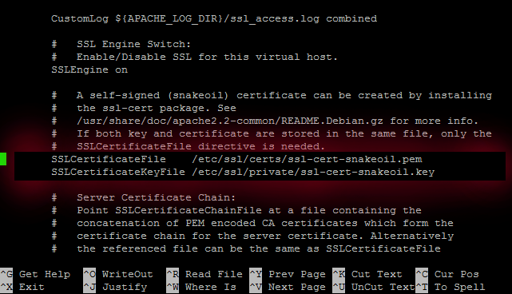

ENABLING SSL
LETSENCRYPT!!!!!
$ git clone https://github.com/letsencrypt/letsencrypt
$ cd letsencrypt
$ sudo ./letsencrypt-auto --apache -d cosimodm.ddns.net --email cosimo_dm@yahoo.it --agree-tos
# ./letsencrypt-auto --apache -d codeme.ddnsking.com --agree-dev-preview --verbose
./letsencrypt-auto --apache -d codeme.ddnsking.com --agree-dev-preview --verbose
!important! forward port 443 on router
https://www.ssllabs.com/ssltest/analyze.html?d=codeme.ddnsking.com
IMPORTANT NOTES:
- Congratulations! Your certificate and chain have been saved at
/etc/letsencrypt/live/codeme.ddnsking.com/fullchain.pem. Your cert
will expire on 2016-05-14. To obtain a new version of the
certificate in the future, simply run Let's Encrypt again.
https://letsencrypt.readthedocs.org/en/latest/intro.html
SELF SIGNED CERT
opessl req -x509 -nodes -days 365 -newkey rsa:2048 -keyout mysitename.key -out mysitename.crt
- “sudo -i”
- “mkdir /etc/apache2/ssl ”
- “openssl req -x509 -nodes -days 1095 -newkey rsa:2048 -out /etc/apache2/ssl/server.crt -keyout /etc/apache2/ssl/server.key ” It is important that you give a FQDN – Fully Qualified Domain Name format for Common Name. ( eg. rpi.projpi.com)
- “ nano /etc/apache2/sites-available/default-ssl”
You are looking to replace the two lines below :
SSLCertificateFile /etc/ssl/certs/ssl-cert-snakeoil.pem
SSLCertificateKeyFile /etc/ssl/private/ssl-cert-snakeoil.key

With the two lines below :
SSLCertificateFile /etc/apache2/ssl/server.crt
SSLCertificateKeyFile /etc/apache2/ssl/server.key

6. ” a2enmod ssl ” ( to enable ssl)
7. “a2ensite default-ssl “
8. “service apache2 restart ” (to restart apache2 )
You will now be able to access your ownCloud securely via https://youserver.com/owncloud